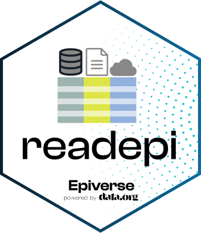

Get event data from the newer DHIS2 versions (version >= 2.41)
Source:R/read_dhis2-helpers.R
get_event_data.RdGet event data from the newer DHIS2 versions (version >= 2.41)
Usage
get_event_data(
login,
api_version,
org_unit,
program,
data_elements,
programs,
program_stages,
org_units
)Arguments
- login
A httr2_response object returned by the
dhis2_login()function- api_version
A numeric with the API version returned by the
get_api_version()function- org_unit
A character with the organisation unit ID or name
- program
A character with the program ID or name
- data_elements
A data frame with the data element IDs and names obtained from the
get_data_elements()function- programs
A data frame with the program IDs and names obtained from the
get_programs()function- program_stages
A data frame with the program stages IDs and names obtained from the
get_program_stages()function- org_units
A data frame with the organisation units IDs and names obtained from the
get_organisation_units()function